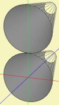

| Identifier | RefShell= | |
| Format | String | |
| Purpose | Reference to other Shell | |
| Used in | Shell | |

With RefShell= it is possible to reference another Shell-sections, where each linked Shell inherits all parameters of its reference as default settings.For example
Shell "D1"
EdgeLength=1cm,1cm
HasBaffle=false
ShellType=Cone;
WD=200mm; HD=100mm;
tD1=250mm; dD1=-50mm;
Shell "D2"
Shift=0, 200mm, 0
RefShell=D1
Here, D2 inherits all parameters of D1 but is displaced by a shift in y-direction of 200mm.